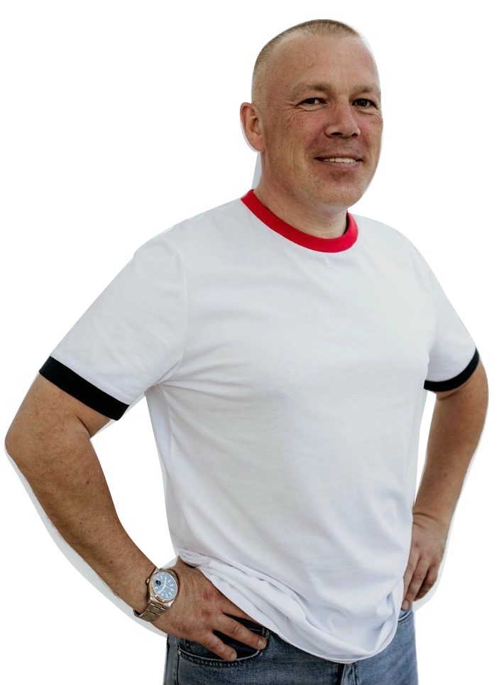
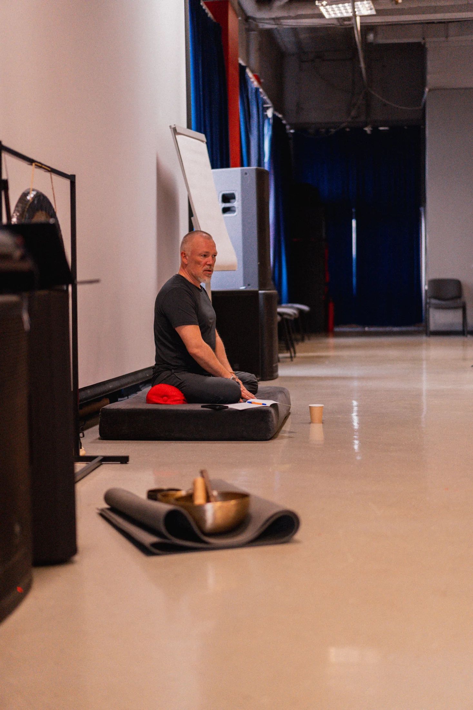
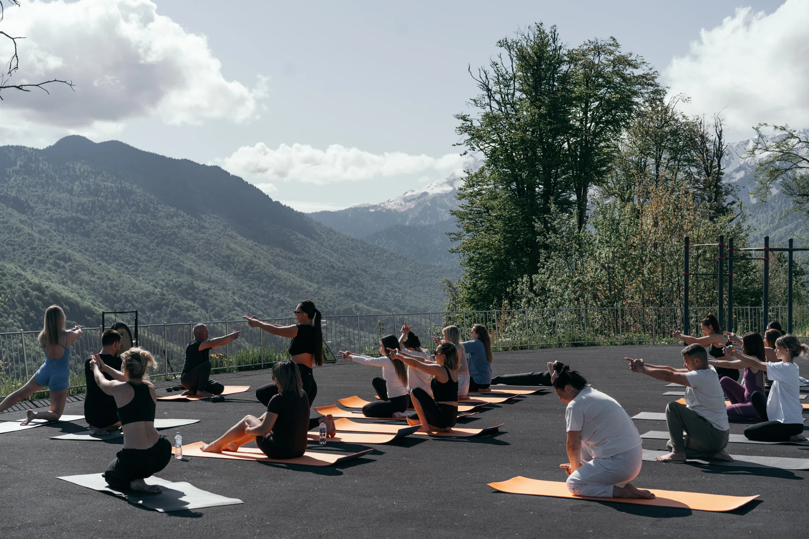

«Я опять всё тащу на себе»
Берёте ответственность за других, а на свою жизнь сил уже не остаётся.

Люди меняются.
Сценарий
повторяется?
Три дня.
Чтобы увидеть свой
привычный сценарий.
Узнать стоимость и условия участия
Снова заслуживать любовь.
Снова спасать всех вокруг.
Снова говорить «да», когда внутри — «нет».
Вы обещаете себе: «Больше никогда».
И однажды замечаете: всё повторилось.
Берёте ответственность за других, а на свою жизнь сил уже не остаётся.
Другие люди, другая работа — знакомый конфликт и прежний финал.
Объяснить себе можете многое. А поступить по-другому пока трудно.
Психотерапевтическая работа и психоаналитический взгляд — рядом с йогой, дыханием и живой практикой.
Чтобы исследовать, откуда пришёл ваш сценарий, заметить, как он проявляется сейчас, и найти пространство для нового выбора.
Сценарный анализ: привычные роли, повторяющиеся решения, ожидания и внутренние запреты.
Телесные практики, йога и дыхательные упражнения: внимание к чувствам, напряжению и реакциям внутри тела.
Игровые ситуации и отработки: возможность увидеть свой сценарий в действии и попробовать другой способ поведения.
 Живой опыт. Живое взаимодействие.
Живой опыт. Живое взаимодействие.В разговоре легко сказать: «Я уже всё понял». В игре становится видно, что вы делаете на самом деле.
На тренинге будет множество игровых упражнений: вы сможете замечать привычные реакции, исследовать свои роли и тренировать новые способы взаимодействия.
Через движение и дыхание — проживать этот опыт внутри собственного тела. Через сценарную работу — пересматривать решения о себе, отношениях и будущем.
Как устроены три дня →


Фотографии с предыдущих мероприятий. Тренинг в Ташкенте проходит в городском формате.
Разговор в кругу, внимание к другому человеку и возможность попробовать новый способ общения.

Фотографии с мероприятий Руслана Молодцова. Площадка предстоящего тренинга в Ташкенте может отличаться.
Разные страны. Разные люди.
И один важный вопрос:
«В свою ли игру я играю?»
Тысячи людей уже стали участниками тренингов Руслана Молодцова. В залах и на выездных встречах, в разговоре, движении и живой практике — каждый приходит со своей историей.
За общими фотографиями — личные вопросы, открытия и решения. Возможность увидеть привычное по-новому и попробовать другой ход.

Из личного архива Руслана Молодцова: тренинги и встречи разных лет.
27, 28 и 29 ноября. Три дня, в которых есть место твоему вопросу, твоему опыту и твоему следующему шагу.
От исследования привычного сценария
к опыту нового выбора.
«Какую историю я повторяю?»
Фокус дня: увидеть, как устроен ваш привычный сценарий.
«Что происходит, когда я выбираю другой ход?»
Фокус дня: перейти от понимания к практическому опыту.
«Как я хочу действовать дальше?»
Фокус дня: связать новый опыт с собственным будущим.
Смысловая программа трёх дней. Последовательность упражнений определяется ведущим в процессе работы с группой.
Три вопроса, чтобы остановиться
и заметить свою повторяющуюся историю.
Упражнение для размышления, не психологическая диагностика. Ответы никуда не отправляются.
Какие ситуации вы повторяете и как сами участвуете в их развитии.
Как ощущается другой способ реагировать — в теле, чувствах и взаимодействии.
Что вы хотите изменить и с какого конкретного действия начнёте.
Глубина изменений индивидуальна и зависит от участия в практике и дальнейших действий.

27, 28 и 29 ноября 2026
Три дня очной практики с Русланом Молодцовым.
Площадка: DoYoga Studio
DoYoga Studio — открыть адрес на карте ↗
+998 90 987 73 15
Интерьеры студии: пространство для движения, дыхания и групповой работы.
Открыть адрес на карте
Для тех, кто замечает повторяющиеся ситуации в отношениях, семье или работе и хочет исследовать своё участие в них. Можно прийти с конкретным вопросом или с ощущением: «Хочу понять, что происходит в моей жизни».
Они работают в одной логике: понять сценарий, заметить его проявления в чувствах и теле, попробовать новый способ действия. Сценарный анализ, психоаналитический подход, игровые упражнения, йога и дыхание дополняют друг друга.
О своём опыте и физических ограничениях стоит заранее рассказать организаторам. Уточните, какие практики предусмотрены и как согласовать подходящий вам уровень участия.
Организаторы сообщат стоимость, часы занятий, точный адрес и порядок оплаты. Кнопка ниже откроет доступные способы связи после добавления контактов.
Это очный групповой тренинг с практическими упражнениями. Если у вас есть вопросы о подходящем формате участия, обсудите их с организаторами заранее.
«Моя игра» с Русланом Молодцовым.
Начните создавать своё продолжение.
Стоимость, условия участия и порядок оплаты уточняются по номеру +998 90 987 73 15.